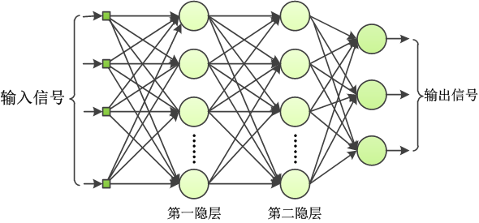
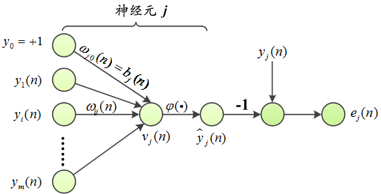
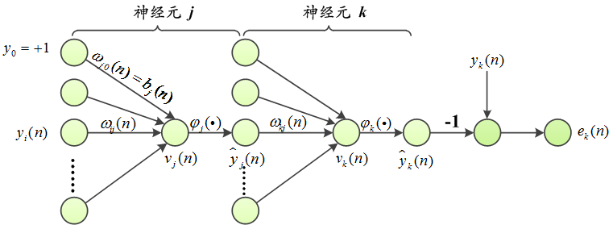

图1. 全连接多层感知器神经网络
\(S=\{\boldsymbol{x}(n),y(n)\}_{n=1}^{N}\)表示训练样本集，假设神经元\(j\)是输出神经元，将训练样本\(\boldsymbol{x}(n)\)作为神经网络的输入信号。输出神经元\(j\)的对训练样本\(\boldsymbol{x}(n)\)的预测输出记作\(\tilde{y_j}(n)\)。
定义输出神经元\(j\)对训练样本\(\boldsymbol{x}(n)\)的误差信号为：\[e_j(n)=y_j (n)-\tilde{y}_j (n)\tag{1}\label{1}\]定义输出神经元\(j\)对训练样本\(\boldsymbol{x}(n)\)的瞬间误差能量为：\[\mathcal{E}_j(n)= \frac{1}{2} e_{j}^2(n)\tag{2}\label{2}\]记\(C\)是神经网络输出层神经元的集合，定义整个神经网络对训练样本\(\boldsymbol{x}(n)\)的总瞬间误差能量为：\[\mathcal{E}(n) = \sum \limits_{j \in C} \mathcal{E}_j(n) =\frac{1}{2} \sum \limits_{j \in C} e_{j}^2 (n)\tag{3}\label{3}\]定义神经网络在训练样本集上的平均能量误差（或者叫经验风险）为：\[\begin{equation}\begin{split} \mathcal{E}_{av}(N) =&\frac{1}{N}\sum \limits_{n=1}^{N}\mathcal{E}(n)\\=&\frac{1}{2N}\sum \limits_{n=1}^{N} \sum \limits_{j \in C} e_j^2(n)\end{split}\end{equation}\tag{4}\label{4}\]
神经网络训练算法的核心思想可以简单地概括为：“错误修正”。将样本\(i\)的预测输出\(\tilde{y}_i\)与真实输出\(y_i\)之间的差值作为误差信号反馈给神经元，调整神经元连接权值。
神经网络训练算法通常都可以分为在线学习和批量学习两种。在线学习算法每次选择一个训练样本，以\(\mathcal{E}(n)\)为损失函数，计算损失函数对连接权值的导数，沿负梯度方向调整连接权值，训练是以样本-样本（case-by-case）为基础的。批量学习算法以\(\mathcal{E}_{av}\)为损失函数，每一回合（epoch）使用所有训练样本计算损失函数对连接权值的导数，沿负梯度方向调整连接权值，训练以回合-回合（epoch-by-epoch）为基础。
|
|
在线学习
|
批量学习
|
|
损失函数
|
\(\mathcal{E}(n)\)
|
\(\mathcal{E}_{av}(N)\)
|
|
优点
|
-
实现简单，存储要求低，是解决大规模困难模式分类任务的有效方法
-
训练样本以随机的顺序呈献给神经网络进行训练，这种随机性使得在线学算法不易陷入局部极小值点
-
如果训练样本中有冗余数据，在线学习算法可利用冗余性减少计算
-
当产生训练数据的环境不稳定时，在线学习算法能够追踪训练数据的微小改变
|
-
梯度向量估计准确，在简单情况下保证收敛到局部最小值点
-
学习过程并行化
-
如果训练样本集中有冗余数据，批量学习算法不能利用这种“冗余性”
|
|
缺点
|
较难并行化（相对的）
|
-
有存储要求
-
可能会陷入局部极值点
|
反向传播算法分为（1）前向阶段（2）反向阶段两个阶段。
前向阶段将训练样本加载至神经网络，从输入层开始逐层计算网络中每一个神经元结点的输出，有了这个出输出值便可以评估预期输出与预期的真实输出之间的误差。反向阶段从输出层开始，以输出神经元的输出值与真实输出之间的差值作为误差信号，反馈给神经网络，通过从输出层向输入层逐层反向调整每一层神经元的连接权值，令神经网络的总瞬间误差能量\(\eqref{3}\)下降最快（在线学习策略），或令神经网络在训练样本集上的平均能量误差\(\eqref{4}\)下降最快（批量学习策略）。
正向阶段很简单，只要按照神经元结点的数学模型计算输出值即可。神经元连接权值的调整由反向阶段完成，是反向传播算法的核心步骤，其中隐层神经元神经元连接权值的调整又是反向阶段的精髓。但本质上不论是输出层神经元还是隐层神经元连接权值的调整方法都是一样的：梯度下降法。调整某个连接权值时，损失函数对这个连接权值求偏导作为搜索方向，学习率是在这个搜索方向上下降的步长。只是损失函数对输出层神经元结点的连接权值求偏导形式简单，而对隐层结点连接权值求偏导数形式复杂。
反向阶段情况一：调整输出神经元\(j\)的连接权\(\omega_{ij}\)

图2. 输出神经元\(j\)
图2是输出神经元\(j\)的示意图。\(m\)表示神经元\(j\)的输入信号的个数（不包含偏置），\(\omega_{ij}\)表示神经元\(i\)到神经元\(j\)的连接权值，\(\varphi (\cdot )\)是激活函数，\(y_j\)是神经元\(j\)的输出信号。神经元\(j\)的诱导局部域\(v_j(n)\)接收到的输入信号强度为：\[v_j(n) = \sum \limits_{i=0}^{m} \omega_{i,j}(n) y_i(n) \tag{5}\label{5}\]
神经元\(j\)的输出信号为：\[\tilde{y}_j(n)=\varphi(v_j(n))\tag{6}\label{6}\]
神经元连接权值的调整以迭代方式进行，每一轮以增量\(\triangle \omega_{ij}\)对连接权值\(\omega_{ij}\)进行修正，\(\triangle \omega_{ij}\)由delta法则（就是梯度下降法）定义：\(\triangle \omega_{ij}(n) = -\eta \frac{\partial \mathcal{E}(n)}{\partial {\omega_{ij}(n)}} \)，\(\eta\)是学习率。这里以在线学习策略为例，使用神经网络的总瞬间误差能量\(\eqref{3}\)作为损失函数，由链式求导法则可得：\[\frac{\partial \mathcal{E}(n)}{\partial \omega_{ij}(n)} = \frac{\partial \mathcal{E}(n)}{\partial e_j(n)} \frac{\partial e_j(n)}{\partial \tilde{y_j}(n )} \frac{\partial \tilde{{y_j}} (n)}{\partial {v_j(n)}} \frac{\partial v_j(n)}{\partial{\omega}_{ij}(n)} \tag{7}\label{7}\] 式\(\eqref{3}\)对\(e_j(n)\)求导，式\( \eqref{1}\)对\(\tilde{y}_j\)求导，式\(\eqref{6}\)对\(v_j(n)\)求导，式\(\eqref{6}\)对\(v_j(n)\)求导，带入\(\eqref{7}\)得：\[\frac{\partial {\mathcal{E}(n)}}{\omega_{ij}(n)}= -e_j(n)\varphi '(v_j(n))y_i(n) \label{8}\tag{8} \]定义局部梯度（local gradient）：\(\delta_j(n)=\frac{\partial \mathcal{E}(n)}{\partial{v_j(n)}}= e_j(n)\varphi '(v_j(n))\)，于是，输出神经元\(j\)与隐层神经元\(i\)之间的连接权值\(\omega_{ij}\)通过以下公式调整：\[ \omega_{ij} (n)= \omega _{ij}(n)+ \eta \delta_j(n)y_j(n) \tag{9} \label{9} \]
反向阶段情况二：调整隐层神经元\(j\)的连接权值\(\omega_{ij}\)
单个感知器结构非常简单，自由参数连接权值\(\boldsymbol{\omega}\)（这里认为包含偏置\(b\)）完全决定。很容易为单个感知器写出输入信号与输出信号之间的数学关系：\(y= \varphi(\boldsymbol{x}^T \boldsymbol {\omega}) \)（\(\boldsymbol{x}\)是列向量）。神经网络损失函数是网络所有自由参数的函数，在对某一个连接权值\(\omega_{ij}\)求偏导时，其它连接权值认为是常数，这时候损失函数可以认为是变量为\(\omega_{ij}\)的一元函数，这个一元函数对它的参数\(\omega_{ij}\)求导形式非常简单，所以单个感知器模型的训练会很简单。
但是对多层感知器，网络的连接结构决定了模型自由参数的个数，输入层神经元的输出会成为隐层神经元的输入，隐层神经元的输出又会成为下一层神经元（可能是输出层神经元，也可能是下一个隐层）的输入，一层一层地嵌套，加上网络结构可以呈现多种变化，这时输入信号和输出信号之间的函数关系写起来就不那么直接了。
做个类比，尽管可以写出斐波那契数列的通项公式，但是斐波那契数的原始定义是通过递推公式给出，在这种存在序列化依赖关系的情况下，使用递推公式定义斐波纳契数更加简洁，也更直接。多层感知器网络也是一样，如果网络结构非常非常复杂，已经很难直接写出输入与输出之间的具体数学形式，但是输入与输出之间的函数关系一定是存在并且是唯一的（暂时不考虑激活函数是概率函数的情况）。而神经网络的损失函数是真实输出（常量）与预测输出（所有连接权值的函数）之间的差求平方再乘以\(\frac{1}{2}\)，所以损失函数是神经网络所有自由参数也就是连接权值的函数。
在调整某个连接权值\(\omega_{ij}\)的时候，最关键是需要知道损失函数对\(\omega_{ij}\)的偏导。求偏导数的时候，将\(\omega_{ij}\)当做未知变量，其它连接权值全部是常数。对输出层神经元\(j\)，只要将\(j\)的所有输入信号乘以相应的连接权值，通过激活函数\(\varphi_j(\cdot)\)就得到了整个网络在输出神经元\(j\)的输出，如果将输出结点的神经元连接权值\(\omega_{ij}\)看作变量，网络的其它连接权值看作是常量，可以想象这时的损失函数对\(\omega_{ij}\)求导形式很简单（就是式\(\eqref{8}\)）。但如果神经元\(j\)是隐层神经元，那么\(j\)的输出信号会传递给下一层与它相连的每一个神经元，如果网络是全连接的，那么输出层的每一个神经元“犯下的错误”都会与\(\omega_{ij}\)间接相关，而且这种相关关系的数学形式是相当的复杂（层层嵌套，叠加，分散到每一个输出结点）。这种情况下，神经网络损失函数对隐层神经元的连接权值\( \omega_{ij}\)求偏导，数学形式会非常复杂。
再来类比斐波那契数列“写出通项公式麻烦，但递推公式简洁”的例子。同样地，如果想要直接写出损失函数与某个隐层神经元连接权值\(\omega_{ij}\)之间的明确函数关系困难，但是利用神经网络这种：“隐层输出又成为下一层输入”的嵌套关系，可以比较简洁地写出相互连接的两层神经元之间的输入输出信号之间的关系，因为，输出层的连接权值调整起来非常容易，于是，尽量把损失函数对后一层连接权值求偏导建立在对与这个神经元直接相连的神经元连接权值求偏导的计算结果之上，然后从输出层逐层递推回去，也就是反向阶段逐层调整隐层连接权值的过程。
图3是隐层神经元\(j\)的示意图，\(k\)是输出层神经元。

图3 隐层神经元\(j\)
现在公式\(\eqref{7}\)要对隐层神经元连接权值\(\omega_{ij}\)求导。前面已经定义了输出层神经元\(j\)的局部梯度\(\delta_j(n)=\frac{\partial \mathcal{E}(n)} {\partial{e_j(n)}} \frac{\partial e_j(n)} {\partial \tilde{y}_j(n)} \frac{\tilde{y}_j(n)} {\partial v_j(n)}\)。对隐层神经元结点，这个公式有点麻烦，因为不知道隐层神经元的预期输出应该是多少，所以无法直接计算隐层神经元的错误信号\(e_j(n)\)，于是把这个公式稍微做一点变化，定义隐层神经元的局部梯度：\[\delta_j(n)= \frac{\partial {\mathcal{E(n)}}} {\tilde{y}_j(n)} \frac{\tilde{y}_j(n)} {\partial{v_j(n)}} \tag{10}\label{10}\] \(\frac{\partial {\tilde{y}_j(n)}} {\partial{v_j(n)}} = \varphi '(v_j(n))\)可以直接计算，剩下的问题就是怎样求\(\frac{\mathcal{E}(n)} {\partial{\tilde{y}_j}(n)}\)。
按照公式\(\eqref{3}\)的定义，\(\mathcal{E}(n) = \frac{1}{2} \sum \limits_{k \in C} e_k^2(n)\)，\(C\)是与节点\(j\)相连的所有输出层神经元的集合。\[\begin{equation} \begin{split} \frac{\partial {\mathcal{E}(n)}} { \partial{\tilde{y}_j(n)}} =& \sum \limits_{k \in C} e_k(n) \frac{\partial {e_k(n)}}{\partial \tilde{y}_j(n)} \\ =& \sum \limits_{k \in C} e_k(n) \frac{\partial {e_k(n)}}{\partial{v_k(n)}} \frac{\partial{v_k(n)}}{\partial{\tilde{y}_j(n)}}\end{split} \end{equation}\tag{11}\label{11} \] \(e_k(n) = y_k(n)-\tilde{y_k(n)}= y_k(n) - \varphi(v_k(n))\)，所以\(\frac{\partial{e_k(n)}}{v_k(n)} = - \varphi '(v_k(n))\)，且\(\frac{\partial{v_k(n)}}{\partial {\tilde{y_j(n)}}} = \omega_{jk}\)，代入式\(\eqref{11}\)：\[\begin{equation} \begin{split} \frac{\partial{\mathcal{E}(n)}}{\tilde{y}_j(n)}=& - \sum \limits_{k \in C} e_k(n) \varphi '_k(v_k(n)) \omega_{jk}(n) \\= & - \sum \limits_{k \in C} \delta_k(n) \omega_{jk}(n)\end{split} \end{equation}\] 将以上结果代入\(\eqref{10}\)得：\( \delta_j(n) = \varphi_j '(v_j(n)) \sum \limits_{k \in C} \delta_k(n) \omega_{jk}(n)\)，然后就可以按照公式\(\eqref{9}\)调整隐层神经元的连接权值了。可以看到隐层神经元连接权值的计算建立在直接与之相连的上一次神经元的梯度计算的基础上。如果隐层神经元的上一次还是隐层，原理相同，逐层向输入层递推。
这一篇是BP算法最简单的在线学习版本，在吴教授的UFLDL教程里面提到了添加规则化项的批量学习算法，同时提到了怎样检查反向传播算法梯度计算是否正确的问题，怎样设置初始参数等问题，这个教程前一阵在微博上也被翻译成了中文，文章写得很简洁，很容易理解，可以进一步参考。
翻书的时候看到：训练神经网络与其说是技术，不如说是艺术。老刘也给我讲过一个段子：用神经网络做学习任务，性能与距离大牛们实验室的距离成反比。所以，也看了各种样的trick，不过，凡是能写在教科书，或者论文里面的建议，也许不是那种真正意义上的黑盒子trick。
参考文献
[1]. Neural Networks and Learning Machines（影印版）, Simon Haykin, 机械工业出版社, 2012